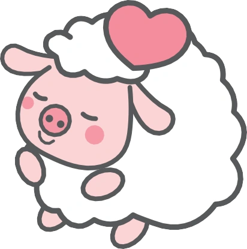
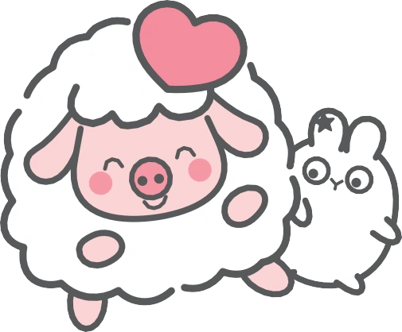

직관적인 이름이 만드는 기억의 힘
이름·발음·외형이 같은 메시지를 전달해 캐릭터를 설명하는 부담을 줄입니다. 특히 중국어 의미를 이해하는 소비자에게 명확한 첫인상을 줄 수 있으며, ZHUBIYANG 영문 표기를 함께 활용해 해외에서도 일관된 브랜드 이름을 쌓아갈 수 있습니다.
쥬비양(ZHUBIYANG)은 쥬(돼지)·비(코)·양(양)의 의미를 결합한 이름입니다. 중국어 猪(zhu)·鼻(bi)·羊(yang)의 발음과 뜻이 캐릭터의 모습으로 이어집니다. 이름을 들으면 ‘돼지코를 가진 양’이 떠오르고, 모습을 보면 이름을 이해할 수 있는 직관적인 브랜드입니다.
이름·발음·외형이 같은 메시지를 전달해 캐릭터를 설명하는 부담을 줄입니다. 특히 중국어 의미를 이해하는 소비자에게 명확한 첫인상을 줄 수 있으며, ZHUBIYANG 영문 표기를 함께 활용해 해외에서도 일관된 브랜드 이름을 쌓아갈 수 있습니다.
분홍 돼지코와 포근한 양털의 조합은 쥬비양을 알아보게 하는 핵심 요소입니다. 여기에 ‘다름을 받아들이고 자신을 믿는 성장’이라는 이야기가 더해져, 귀여운 외형을 넘어 소비자가 공감하고 애착을 가질 수 있는 캐릭터 브랜드를 지향합니다.
다양한 표정과 응용동작은 숏폼 애니메이션, 이모티콘, 그림책으로 확장할 수 있습니다. 인형·아트토이·문구·패션잡화·생활용품 등 기존 상품 디자인을 바탕으로, 브랜드 협업과 캐릭터 라이선싱까지 연결할 수 있는 IP를 지향합니다.
분홍 돼지코를 가진 작은 양이 자신을 믿게 되기까지. 쥬비양의 마음속 이야기를 여섯 장면으로 만나보세요.

다른 양들처럼 하얗고 포근한 털을 가졌지만, 쥬비양에게는 반짝이는 분홍 돼지코가 있어요. 누구나 한눈에 알아보는 그 코가, 쥬비양에게는 때때로 숨기고 싶은 비밀이었답니다.

쥬비양은 수줍음이 많아요. 친구에게 다가가고 싶어도 한 걸음 망설이곤 하죠. 하지만 그 조용한 마음 안에는 누군가를 아끼고 도와주고 싶은 따뜻함이 자라고 있어요.

특별한 돼지코는 단순한 냄새만 맡는 게 아니에요. 슬픔과 두려움, 다정한 마음까지도 희미하게 느낄 수 있답니다. 자신의 다름이 누군가의 마음에 다가가는 길이 될 수 있다는 걸, 쥬비양은 조금씩 알아가요.
친구나 마을에 도움이 필요할 때, 쥬비양의 마음은 달라져요. 숨고 싶었던 작은 양이 용기를 내어 앞으로 나서죠. 용기란 무섭지 않은 마음보다, 소중한 이를 위해 움직이는 마음에 가까운지도 몰라요.

전설에 따르면 쥬비양의 코에는 ‘별의 심장’ 일부가 깃들어 있어요. 생명을 살리고 마을을 지킬 수 있는 잠재력이 숨어 있죠. 다리의 작은 별무늬도 그 비밀을 가리키는 단서랍니다. 힘을 깨우는 열쇠는 자신을 믿는 마음이에요.

쥬비양은 조금씩 자신의 돼지코를 좋아하게 됩니다. 다른 모습도, 수줍은 마음도 모두 나의 일부니까요. 친구들과 마음을 나누며 자라나는 작은 양. 쥬비양의 이야기는 오늘도 자신만의 빛을 찾아가는 중이에요.
캐릭터 매뉴얼의 설정을 바탕으로 구성한 소개 이야기입니다. 그림은 원본 응용동작을 사용했습니다.